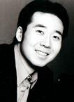
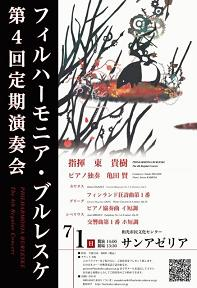

フィルハーモニア・ブルレスケ 第4回定期演奏会
2007年7月1日(日) 於：和光市民文化センター「サンアゼリア」大ホール
指揮：東貴樹／ピアノ独奏 亀田賢（※）
ロベルト・カヤヌス フィンランド狂詩曲第1番
エドヴァルド・グリーグ ピアノ協奏曲（※）
ジャン・シベリウス 交響曲第1番
ピアノ独奏：亀田賢

スズキメソードにて学ぶ。
国立音大附属中学校在学中に、JPTA（日本ピアノ教育連盟）でファイナリスト、毎日学生音楽コンクール東京大会入選。
91年、米国ウォルナットヒル芸術高校在学中にハーバード音楽連盟オーディションにて史上最年少3位。
98年、ニューイングランド音楽院ピアノオーナーズオーディション合格、ジョルダンホールにて演奏。ボストンWGBH・FMラジオ生演奏。学士課程取得。
99年、ニューヨークファイブタウンコンクールにて2位。東京にて、第95回トレモロ会リサイタル出演。
00年、イーストマン音楽院修士課程取得。
01年、アーティスト国際オーディション特別賞受賞。渡仏。パリのエコールノルマル音楽院在籍中、コルトーホールにてコンサート出演。
02年、ブレストコンクールにて一等メダル取得。ＮＹカーネギーリサイタルホール、東京オペラシティリサイタルホールにてリサイタル。オランダのホーランドミュージックセッション音楽祭をはじめ海外で多数のコンサートに出演。
現在日本を中心に独奏、デュオ、室内楽等幅広い活動を行っており、今後が最も注目されるピアニストの一人である。これまでに小松田茂、新井伶依子、栗本恵里子、小畠康史、セス・キメルマン、ホン・クァン・チェン、パトリシア・ザンダー、ナターリア・アントノ－バ、ギグラ・カツァラーバ、ジェラ－ル・フレミーの各氏に師事。
2007年より国立音楽大学附属高等学校・中学校にて、ピアノ講師として教鞭を取る。
フライヤー
